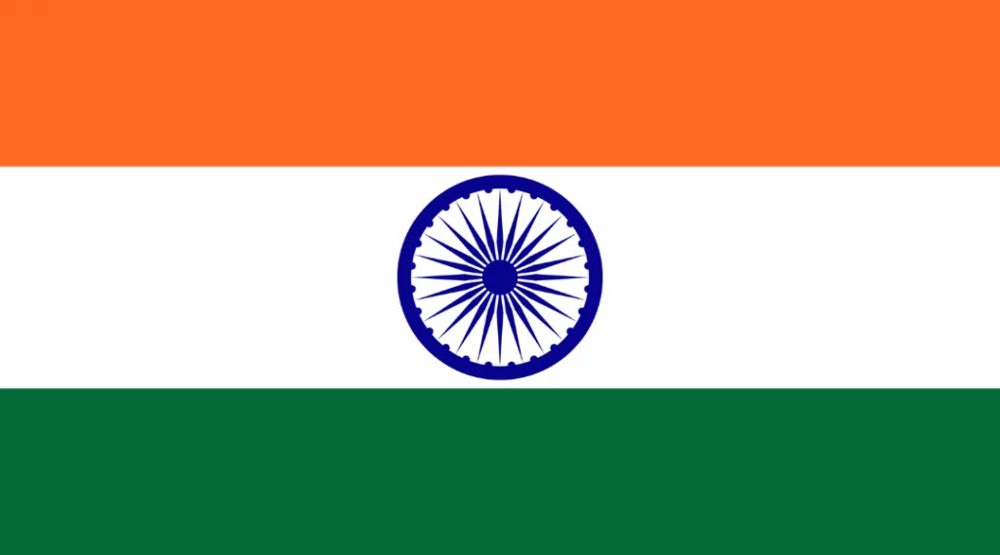
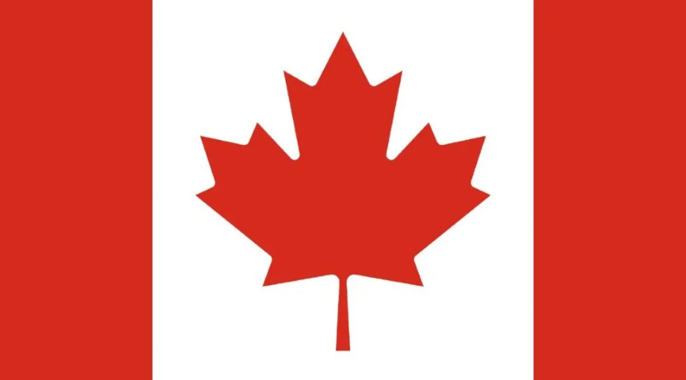
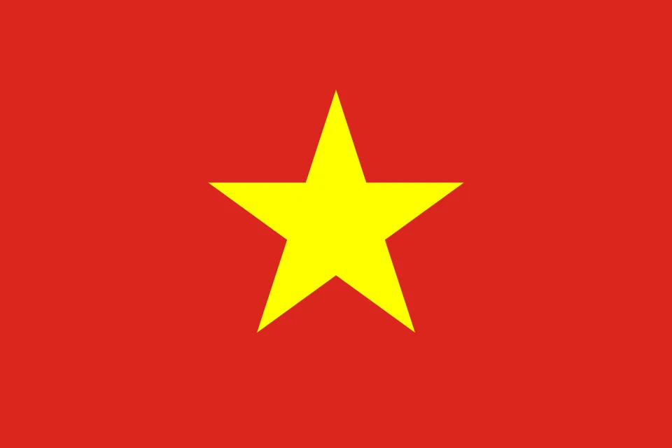

Groma Global LTD, established in 2006 and headquartered in Mumbai, is a leading global trader of agricultural commodities. With over 19 years of experience, we specialize in sourcing and supplying a wide range of products including grains, pulses, cereals, sugar, spices, sesame seeds, animal feed and organic items.
Our robust sourcing network across India, Africa, the Black Sea region, South America, and Southeast Asia allows us to ensure quality, consistency, and competitive pricing. Whether serving large enterprises or small importers, we provide tailor-made solutions backed by reliable logistics, warehousing, and cold storage facilities.
Driven by a commitment to integrity, transparency, and customer satisfaction, Groma Global stands as a trusted partner for agro commodity needs — delivering not just products, but value.
Our team of experts guarantee 100% traceability of any organic products traded by us. We source directly from India & Africa.
Groma Global’s robust global network enables us to source and supply top-quality agricultural commodities from:


